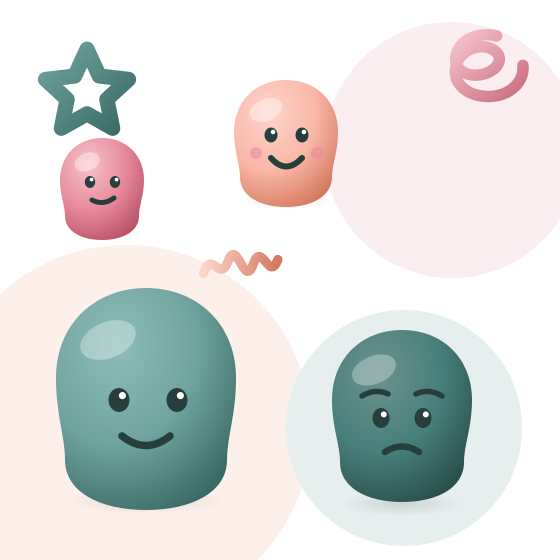

Recognise
Understand what you're feeling.
Year 3–6 Emotional resilience & conflict skills
An engaging emotional resilience and conflict skills workshop designed for Year 3–6 students.
Mind Matters gives students practical tools to understand their emotions, regulate their reactions and navigate conflict with confidence.

The real-world problem
Every week in Australian primary schools, students run into moments they don't yet have the words or the strategies for.
A misunderstanding at lunch. A disagreement over a game. A friendship that suddenly feels complicated. In those moments, emotions can rise faster than the skills needed to manage them — and a small problem can escalate into a bigger one.
Students often know that they are upset. What they frequently don't know is what to do next.
“Conflict is a normal part of growing up. The challenge is giving students the skills to respond to it constructively.”
What students regularly encounter
Misunderstandings between friends
Disagreements that escalate quickly
Frustration that's hard to shake off
Difficulty putting feelings into words
Difficulty seeing another person's perspective
Emotions too intense to problem-solve through
None of this means something is wrong with a child. Emotional regulation and communication are practical skills — and like any skill, they can be taught, practised and strengthened.
The Mind Matters approach
Every activity in the workshop builds towards the same simple progression — so students leave with a sequence they can actually remember and use.
Understand what you're feeling.
Learn strategies to calm your body and mind.
Express feelings and listen to others.
Work towards a respectful solution.
Learning outcomes
Six practical capabilities that students can carry into the classroom, the playground and home.
Recognise and name emotions and understand how they can affect behaviour.
Develop practical strategies to manage strong emotions before reacting.
Learn to express feelings respectfully and use communication to reduce misunderstandings.
Understand how listening can help people feel heard and improve conflict resolution.
Practise working through disagreements and finding constructive solutions.
Understand when a trusted adult can help support a situation.
How we teach it
Students don't build emotional skills by being told about them. Mind Matters is built around practical activities, games, worksheets and realistic scenarios — so students get to practise the strategies, not just hear them.
Movement and play used to explore emotions and reactions.
Realistic situations students actually encounter at school.
Facilitated conversation where every perspective is heard.
Structured activities students can revisit after the session.
Practising expressing feelings and listening actively.
Tools for creating space and calming down before reacting.
Evidence-informed
Mind Matters was developed by reviewing Australian research on primary-aged students' wellbeing, bullying and emotional regulation, and by speaking directly with a senior teacher, a junior teacher and a parent about what they see in classrooms and at home.
We're careful about what we claim. Research explains why these skills matter — it isn't used to promise outcomes the workshop can't guarantee.
What people say
We sent the full prototype to Year 3–6 teachers and asked them to review it.
“The strategies were presented in an age-appropriate and accessible way … easy for students to understand and apply.”
“The presentation and the worksheets look great … very effective and age appropriate.”
Join us in creating change
Bring Mind Matters to your school and give Year 3–6 students practical strategies they can use beyond the workshop.
In-person or online · Approximately 2 hours